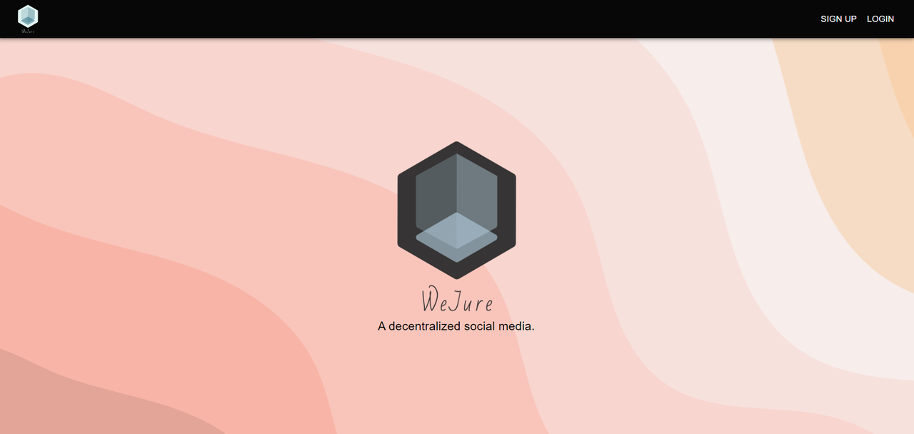

Getting Started
- Requirements
- Get the code
- Build and run
- Development mode
- Use other relays and media servers
- Use WeJure on more than one machine
- Delete all data
- For developers
WeJure runs on your own machine as a single process: a small Node.js server serves the app and runs a Nostr relay and a Blossom media server next to it, all at http://localhost:8020.
Requirements
Check both with:
node --version
java -version
Get the code
git clone https://github.com/clojure-finance/WeJure.git
cd WeJure
Build and run
npm install
npm run release # builds public/js/main.js
npm start # http://localhost:8020
Open http://localhost:8020. Using WeJure explains what you can do there.

The server keeps its data in data/. Its options:
node server/index.js [--port 8020] [--host 127.0.0.1] [--data data] [--public public]
The PORT and HOST environment variables work too.
Development mode
npm run dev
This runs the shadow-cljs watch build, which reloads the page as you edit the ClojureScript, together with the server, also at http://localhost:8020.
Use other relays and media servers
By default the app uses the relay and media server of the server it came from. To spread the data across independent servers, list them in public/config.js; no rebuild is needed:
window.WEJURE_CONFIG = {
relays: ["wss://relay-one.example", "wss://relay-two.example"],
mediaServers: ["https://media-one.example", "https://media-two.example"],
};
Any standard Nostr relay and Blossom server works. Each account also saves its lists of relays and media servers (NIP-65, BUD-03), so others can find its data. With more than one relay, each client copies its user's own events, and the messages addressed to them, to any relay that misses them, once per session, so a relay that was down catches up.
Use WeJure on more than one machine
To reach the server from other machines, start it with --host 0.0.0.0 behind a TLS proxy, so the relay is reachable as wss://. Before you open it to the public, note that its media server accepts uploads of up to 100 MB from any account, with no quota. Its relay closes connections that send a message over 256 KB and allows 100 subscriptions per connection.
Delete all data
Stop the server and delete its data/ directory. Logins live only in the browser tab, and each browser's cache of an account is deleted on logout, or with the site's stored data.
For developers
Tests
npm test
runs the Node tests (about 1 minute) against several real server instances, which the tests crash on purpose, plus a relay and a media server that lie. They cover accounts, the feed, messages, media, redundancy, live updates, the device cache, fetching only what is new, and the community rules, including attacks on them.
npx playwright install chromium # once, to install the test browser
npm run test:e2e
builds the release version and runs Playwright through every page with several users, communities included (about 1 minute). It fails on any console error or warning. It starts its own server with empty data on port 8020, so stop any WeJure server there first.
npm run bench
times loading, reading and sending in a community, and counts the events the relays send for each.
Code layout
src/wejure/: the ClojureScript pagespackages/wejure-nostr/: the data layer, a local npm package in JavaScriptserver/: the server (app, relay and media server on one port)public/config.js: the relays and media servers of the site
The WeJure README describes the data model, the security model and every module.